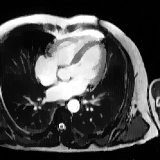
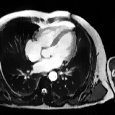

Motion estimation and correction for simultaneous PET/MR using SIRF and CIL (CO)
Richard Brown, Christoph Kolbitsch, Claire Delplancke, Evangelos Papoutsellis, Johannes Mayer, Evgueni Ovtchinnikov, Edoardo Pasca, Radhouene Neji, Casper Costa-Luis, Ashley G. Gillman, Matthias J. Ehrhardt, Jamie R. McClelland, Bjoern Eiben, and Kris Thielemans
Philosophical Transactions of the Royal Society A: Mathematical, Physical and Engineering Sciences, 2021
SIRF is a powerful PET/MR image reconstruction research tool for processing
data and developing new algorithms. In this research, new developments to SIRF are presented,
with focus on motion estimation and correction. SIRF’s recent inclusion of the adjoint of the
resampling operator allows gradient propagation through resampling, enabling the MCIR technique.
Another enhancement enabled registering and resampling of complex images, suitable for MRI.
Furthermore, SIRF’s integration with the optimization library CIL enables the use of novel algorithms.
Finally, SPM is now supported, in addition to NiftyReg, for registration.
Results of MR and PET MCIR reconstructions are presented, using FISTA and PDHG, respectively.
These demonstrate the advantages of incorporating motion correction and variational and structural priors.


 
